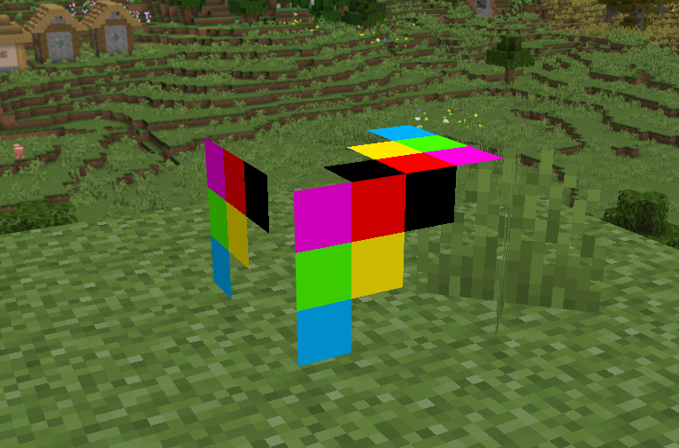
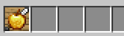
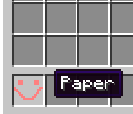
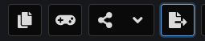
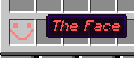
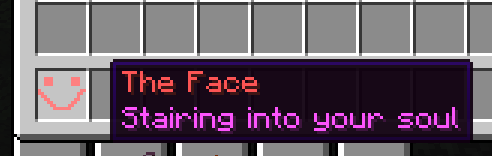
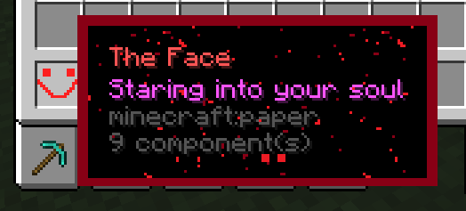

This guide will teach you the basics about the minecraft resource pack structure, and give you an introduction to item/block models, how they can be used in a resource pack, and most importantly, how to create your own custom item models in multiple versions of the game. Note that this guide is intended for people who’ve used resource packs before, but never really understood them completely or want to learn more about them.
Before starting, you should make sure you can…
- Understand and use JSON
- Find your
resourcepacksdirectory and create apack.mcmetafile
General knowledge
Resource locations
The way minecraft categorizes and identifies resources is using a system called resource locations. A resource location consists of two parts, the namespace and the path. The namespace is the overall “group” a resource belongs to. For all minecraft-internal resources, the minecraft namespace is used.
When creating custom resources through a resource or data pack, it is considered best practices to create your own namespace instead of putting custom content in the minecraft namespace.
This has the advantage of separating the parts of your resource or data pack that override vanilla behaviour (like the model of the “apple” item or the loot dropped from cobblestone) in the minecraft namespace and keeping the parts that add new content (for example custom item models/textures or custom biomes) in your own namespace.
The path of a resource location is found after the colon in a resource location, and refers to the actual resource itself. Different properties may already have a certain starting path, for example, when assigning a texture to an item model, putting in minecraft:item/paper actually references minecraft:textures/item/paper. This is used to shorten the resource location, but mainly to limit what resources can actually be used in a property. For example, a .json item model should not be used in a property where a .png texture is expected. Since models and textures are split in different directories, this kind of “starting path” in properties allows the game to split off different resource types.
An important thing to keep in mind is that a file extension is NOT required in most places using a resource location. For example, the game already knows that all of the model files will be .json, so no need to specify the extension in a resource location. Another trick used to simplify resource locations is leaving out the namespace, and only specifying the path. This will default the namespace to minecraft, meaning minecraft:models/item/iron_sword and models/item/iron_sword are exactly the same. Keep in mind that this ONLY works with the default minecraft namespace, and when using custom namespaces, you’ll always have to add them to the resource location.
Folder structures and resource locaitons
A resource location is used to point the game to another file in the loaded resources. When creating a resource pack, ALL resource locations will refer to the assets directory. When creating a datapack, all resource locations will refer to the data directory. The namespace of the resource location specifies the sub-directory to look for. That means that for example minecraft:models/item/iron_sword will refer to the file in /assets/minecraft/models/item/iron_sword.json. This also means that “creating your own namespace” simply means creating a new directory in the assets/data folder of your pack: /assets/your_namesace would create a new namespace called your_namespace. Note that resource and data packs are a completely different thing, and the assets folder can only be used in a resource pack, while the data folder can only be used in a data pack.
Item/Block Models
Models are used to tell the game how to render an item/block, including the shape and different display transformations (for example, some items have to be rotated differently when held in the main hand than in the inventory). A model is able to reference different textures used for parts of the model shape, which are mapped to the model using UV coordinates. Models can also inherit properties from their parents, which is mainly used to avoid repeating the same config in multiple models.
{
"parent": "minecraft:item/generated",
"textures": {
"layer0": "minecraft:item/paper"
}
}
This is the vanilla item model for paper, a relatively simple model. As you can see, it is inheriting (esentially “copying”) the properties from the generated item model. Note that the parent property has a starting path of models, meaning we’re referencing an item model called “general” here. You’ll see the generated model a lot when working with item models, it is a built-in model that generates a 3D item model using the specified textures, the 3D part of generated items is the depth they all have. If you drop any item or hold it in your hand in-game, you can see that it is not only a flat texture, but has a bit of depth.
How item models actually work
To better explain how the textures property and model inheritance actually works, we’re going to be looking at block models for a moment.
{
"parent": "minecraft:block/cube_all",
"textures": {
"all": "minecraft:block/cobblestone"
}
}
This is the model for cobblestone. You can see that its parent is the cube_all model, which is used for full cube blocks that only have one texture on every side. This is used for a lot of blocks, which is why we can’t actually see the individual shapes making up a block in this model. Let’s go another layer deeper, and take a look at cube_all.json:
{
"parent": "block/cube",
"textures": {
"particle": "#all",
"down": "#all",
"up": "#all",
"north": "#all",
"east": "#all",
"south": "#all",
"west": "#all"
}
}
Now what are we looking at here? We can see that this model is also only inheriting from the cube block model, but this model can show us a bit about the textures property and how it actually works. The textures property here is specifying all of the textures for different sides of a block, as well as the particle texture used for that block. Looking at the values, we can see that they’re all set to #all. Now what does that mean? Let’s look at one of the models using this one as a parent again (the cobblestone texture above in this case), and we can see that the one texture that’s used on all of the sides of cobblestone is specified in the all field of the textures property.
You might’ve already figured out how textures works at this point. Models that are only used as a base/parent for others can use these “placeholders” (the one starting with a “#”) to specify textures that are not defined in the model itself at all, but instead defined in the textures property of the models inheriting from them. Our cube_all model is just an utillity model that maps all of the textures from the cube model (where the actual shape of the block is defined) to only one texture called all, so that you don’t have to type the same texture 7 times when creating a block that has the same texture on all sides.
Now let’s take a look into the cube block model:
{
"parent": "block/block",
"elements": [
{
"from": [0, 0, 0],
"to": [16, 16, 16],
"faces": {
"down": { "texture": "#down", "cullface": "down" },
"up": { "texture": "#up", "cullface": "up" },
"north": { "texture": "#north", "cullface": "north" },
"south": { "texture": "#south", "cullface": "south" },
"west": { "texture": "#west", "cullface": "west" },
"east": { "texture": "#east", "cullface": "east" }
}
}
]
}
We can see that this one is using the block block model as a parent, but it just specifies a few display transformations (which I’m going to explain later). The actual shape of any cubic block is defined right here, in the elements property. All models are made up of those elements, which can be described as small cubes making up the model. In this case, we only have one big cube making up the entire block model. The from and to properties take in 3 coordinates (x, y, z) that are used to position this element inside the model. A normal block is 16x16 size units large, meaning we’re defining one cube that goes from the origin of the model (0, 0, 0) to the highest position that will still make the model fit within the block gird (16, 16, 16).
This cube has a face on each of its sides (down, up, north, south, west, east). Each face can have its own texture, in this case we’re using the texture placeholders again, because this model is only used as a base for other models to inherit. We’re not going to worry about cullface too much, it is used in optimization and will for example not render the down face if there’s a block under this block to improve performance.
Now let’s say we only want to use one texture to create one item/block model that has a lot of faces. As an example, let’s take the vanilla cube model from earlier and make it have a different texture on each side, while only using one texture file. As a texture, we’re going to use this:
You can see that the texture contains all of the faces of our cube (the different colors). The idea is that each face will have a different color. If we actually apply this texture to every face using the cube model, it looks like this:

The texture is being applied to each face, but currently, we’re seeing the entire texture on each of the faces. That’s not what we want, so how do we get the game to only display certain parts of our texture on the faces? That’s where UV texturemapping comes in place. Esentially, you are able to specify coordinates in your texture for each face to use. So for example, to use the purple part of the texture for a face, we’d grab the texture from (0,0) to (4,4) and apply it to our face. This is how we’d use the UV coordinates on our faces:
{
...
"faces": {
"north": {"uv": [0, 0, 4, 4], "texture": "#texture", "cullface": "north"},
"east": {"uv": [0, 4, 4, 8], "texture": "#texture", "cullface": "east"},
"south": {"uv": [4, 0, 8, 4], "texture": "#texture", "cullface": "south"},
"west": {"uv": [4, 4, 8, 8], "texture": "#texture", "cullface": "west"},
"up": {"uv": [4, 12, 0, 8], "texture": "#texture", "cullface": "up"},
"down": {"uv": [12, 0, 8, 4], "texture": "#texture", "cullface": "down"}
}
}
Layering textures with the generated parent
Alright, now that we’ve covered how models work in general, let’s get back to the item model from the beginning.
{
"parent": "minecraft:item/generated",
"textures": {
"layer0": "minecraft:item/paper"
}
}
We can see that the built-in generated parent has a texture placeholder/variable named layer0. Now why is it called that? The generated model has support for multiple texture layers, starting at layer 0. For example, we could create a texture like this:
{
"parent": "minecraft:item/generated",
"textures": {
"layer0": "block/oak_planks",
"layer1": "item/iron_sword",
"layer2": "item/golden_apple"
}
}
Which would create a texture that contains a sword, a golden apple and oak planks, looking like this:

The order of the layer IDs (0, 1, 2) determines the order in that textures are placed over eachother. You might be wondering why oak planks doesn’t show up as a 3d model, this is due to us using the block texture in layer 0, instead of the actual model that is used to render the block in the world and as a 3d item in your inventory. Remember, block/oak_planks actually refers to textures/block/oak_planks! The reason we’re not able to use a model here is that we’re using textures from the generated parent, which then generates a 3d model out of all those layered textures.
Now what are the advantages of using layers, couldn’t you just paste all of the textures into one texture? Well, one advantage of it can be the fact that layered textures act dynamic, meaning when you are using any vanilla texture in your item model (like the oak planks in the example above), it will change if another resource pack is applied that changes that texture.
The best advantage of using layers in 100% custom textures is probably the fact that you can create one texture and use it in a lot of similar-looking items. A good example of this are vanilla potions. They use only one texture for the contents of the bottle, and different textures for the actual bottle. This makes it way easier to change the texture of the content, as you’d only have to change it once instead of changing it for every potion type. The content layer also gets colored by the game, which cannot be changed in versions below 1.21.4, but we’ll talk about that later.
Item display transformations
The last important part of models are display transformations. They can be applied to any model, and define how it will be displayed when used as an item, for example in the main hand, on your head, on the ground or in an item frame.
To understand them, we’ll have a look at the generated.json item model file. Yes, I kind of lied earlier saying that generated is a completely built-in model. When using models/item/generated, you’d refer to the generated.json model file, and that file has models/builtin/generated as a parent, which is the actual built-in model. We’re only talking about this now because the generated model file sitting in between the built-in one only contains some basic display transformations:
{
"parent": "builtin/generated",
"gui_light": "front",
"display": {
"ground": {
"rotation": [0, 0, 0],
"translation": [0, 2, 0],
"scale": [0.5, 0.5, 0.5]
},
"head": {
"rotation": [0, 180, 0],
"translation": [0, 13, 7],
"scale": [1, 1, 1]
},
"thirdperson_righthand": {
"rotation": [0, 0, 0],
"translation": [0, 3, 1],
"scale": [0.55, 0.55, 0.55]
},
"firstperson_righthand": {
"rotation": [0, -90, 25],
"translation": [1.13, 3.2, 1.13],
"scale": [0.68, 0.68, 0.68]
},
"fixed": {
"rotation": [0, 180, 0],
"scale": [1, 1, 1]
}
}
}
The file is basically used to tell the game how generated items should be displayed by default. We can see that it only contains gui_light, which is used to specify how the item is lit in the GUI (for example in the inventory) and display, which is used to specify all of the display transformations. Note that all of them are technically optional, but should be provided if the position looks weird. The following types of display transformations exist:
| ID/Name | Function |
|---|---|
| thirdperson_righthand | Item in the right hand, in 3rd person |
| thirdperson_lefthand | Item in the left hand, in 3rd person |
| firstperson_righthand | Item in the right hand, in 1st person |
| firstperson_lefthand | Item in the left hand, in 1st person |
| gui | How the item is displayed in the GUI (for example in the inventory) |
| head | Item on the player’s head (for example wearing an end rod) |
| ground | Item on the ground when dropped or thrown as a projectile |
| fixed | How the item is displayed in an item frame |
(This list is NOT complete, and only meant to be used as an overview over possible display transformations! You can find a full list on the Minecraft Wiki.)
The transformation values themselves are fairly straight forward to use, rotation, translation and scale can be used to, well, rotate, translate and scale the model in 3D space. All of them can be specified as an array, and also left out if you only need to rotate the model for example.
Custom models in older versions
Now that you’ve understood how models work in general, we can finally look into how to create items with custom models. To understand how they work in modern versions, we’ll first take a look at how it used to work.
Custom models using model overrides
A common way to get items to change their model to any other model (including custom ones) used to be the overrides property of item models. This is actually used by the game itself in a few places (I’m referring to older versions here), for example the bow changing its model when pulled, or the clock changing its model based on the current time. Here’s the overrides property of the bow (from 1.20.4):
{
...
"overrides": [
{
"predicate": {
"pulling": 1
},
"model": "item/bow_pulling_0"
},
{
"predicate": {
"pulling": 1,
"pull": 0.65
},
"model": "item/bow_pulling_1"
},
{
"predicate": {
"pulling": 1,
"pull": 0.9
},
"model": "item/bow_pulling_2"
}
]
}
You can see that the overrides array contains some objects defining different overrides for the bow model. All of them contain a predicate, which is used to tell the game when to use the model specified in the model property. In our bow model, we’re using pulling and pull in the predicate to determine if the bow is being pulled, and by how much. For another example, the clock model has a lot of overrides:
{
...
"overrides": [
{ "predicate": { "time": 0.0000000 }, "model": "item/clock" },
{ "predicate": { "time": 0.0078125 }, "model": "item/clock_01" },
{ "predicate": { "time": 0.0234375 }, "model": "item/clock_02" },
{ "predicate": { "time": 0.0390625 }, "model": "item/clock_03" },
{ "predicate": { "time": 0.0546875 }, "model": "item/clock_04" },
{ "predicate": { "time": 0.0703125 }, "model": "item/clock_05" },
{ "predicate": { "time": 0.0859375 }, "model": "item/clock_06" },
{ "predicate": { "time": 0.1015625 }, "model": "item/clock_07" },
...
]
}
All of those overrides are used to map some timeframe in a minecraft day to a certain model. Note that predicate properties, such as pull or time (as seen above) don’t expect the value (for example time) to be exactly equal to them, they’ll just be checked for the nearest one in the order they’re specified.
The custom_model_data predicate
Now how exactly was this used to make items change thier model? Well, there exists a predicate property that’s not used in vanilla at all, and it’s called custom_model_data. It accepts any number and checks for that number in the CustomModelData NBT property on the item (example: /give @s paper{CustomModelData:1}). Here’s how you could use it in a model:
{
...
"overrides": [
{
"predicate": {
"custom_model_data": 1
},
"model": "my_namespace:item/my_custom_item"
}
]
}
To actually use this on a vanilla model, you’d have to copy the vanilla model and then add the overrides to it. Here’s how that would look with the paper model:
{
"parent": "minecraft:item/generated",
"textures": {
"layer0": "minecraft:item/paper"
},
"overrides": [
{
"predicate": {
"custom_model_data": 1
},
"model": "my_namespace:item/my_custom_item"
}
]
}
You would put this model file in the exact same path the vanilla paper model is located at, so /assets/minecraft/models/item/paper.json (resource location minecraft:models/item_paper) and then give yourself the item that has the model you used, and set CustomModelData to the number you used in the predicate. For multiple custom models on one item, you could just add more predicates.
Changes to item data
Starting with 1.20.5, mojang changed the way data is stored on items from traditional NBT (example: {CustomModelData:1,CustomName:"My Item"}) to the new component system (example: [custom_model_data=1,item_name='{"text":"My Item"}']).
This is important since the command part of the old way has slightly changed, now looking something like this: /give @s paper[custom_model_data=1].
Newer versions
Recently, mojang has changed quite a few things about components, item models and vanilla data and resource pack functionallity, expanding all of it by a lot and adding some really cool and useful features. This also changes (and mostly simplifies/improves) the way we can make items change thier model.
The item_model component
In version 1.21.2, mojang introduced the item_model component, which can be used to set an item’s model directly, without the use of overrides. This simplifies the process a lot, since we don’t need to change the actual vanilla model file anymore, we just need our custom model file. For example, let’s say we have this file located in /assets/my_namespace/models/item/my_model.json:
{
"parent": "minecraft:item/generated",
"textures": {
"layer0": "my_namespace:item/my_model"
}
}
This is all we need. If we have this model, we can just use the item_model component to make ANY item use that model: /give @s paper[item_model=my_namespace:my_model]. Note that the item_model component’s “starting path” is /models/item, meaning my_namespace:my_model actually refers to my_namespace:models/item/my_model.
The difference between item_model and custom_model_data is basically that custom_model_data will load the original item model (like paper.json) and from there get redirected to you custom model file through overrides, while item_model forces the game to use your custom model file directly.
Advantages
This method allows us to entirely get rid of model overrides, and just use our custom model directly. Since we’re no longer bound to use numbers to identify models, it’s also way easier to remember and use. Since we don’t need to replace any vanilla models and add overrides anymore, that also means we can use our one model on every item in the game, without any additional effort required.
Another cool use case would be replacing the model of any item with any other vanilla item model, without using any resource pack. Since all of the vanilla models exist in the game’s default resource pack, we can just reference them like this: [item_model=minecraft:axe]. This component will make any item look like an axe, keep in mind that the item will ONLY look like an axe, since we’re only replacing the model, which specifies how the item is rendered, not how it acts.
Item model definitions
Starting with 1.21.4, mojang completely overhauled the system used to load item models. Previously, the game would load the model for any item from /assets/minecraft/models/item, and dynamically changing models (like the clock or bow) would use overrides to change their models. Every “block-item” (items that belong to / place a certain block) used to have its own item model file, just inheriting from the actual block model using the parent.
All of that has changed in 1.21.4, since mojang introduced the new item model definitions. Those actually work quite similar to overrides, but they are way more powerful. What exactly is their purpose? Item model definitions consist of some small logic that tells the game where to look for the actual model used for rendering. Item models are not meant to contain this logic anymore, they just define how the item should actually be rendered in the game. The actual files for those definitions are located in /assets/minecraft/items and look like this (this one is the vanilla paper definition):
{
"model": {
"type": "minecraft:model",
"model": "minecraft:item/paper"
}
}
They all contain a model property that can contain any item model type. Item model types are different types of “logic” the game can use to determine the model. The simplest one is minecraft:model, which just uses the model given in the model property. As you can see above, the model property starts at /models/, meaning item/paper actually refers to models/item/paper.
A lot more model types that can be used to dynamically change your item’s model exit (full list here), a really cool one is minecraft:composite, allowing you to use multiple models layered over each other to render the item, similar to the layering using the generated parent, but with models instead of textures. In a recent snapshot for the (at the time of writing this) upcoming version 1.21.5, mojang even added the abillity to dynamically switch models based on components, meaning models can change based on any item data, such as enchantments!
The item_model component was also slightly changed and now only accepts item model definitions instead of the actual models. custom_model_data was also reworked and can now be used in combination with things like tints to color models or parts of a composite model based on given tints in the custom_model_data object.
Advantages
Compared to how simple custom models used to be in 1.21.2, at first this seems like it’s making things more complicated again. But for the amount of things now possible using this new system, I’d say adding one more file is definitely fine. Compared to previous overrides, it has the advantage of being usable on every model, the system is more intuitive since it directly chooses the model to load instead of redirecting from other model files and has a lot more features.
Customizing your items
This entire time, we’ve focused on changing the item’s model, but how do we add a custom name, description or similar things to it?
(Make sure to read the old NBT part even if you don’t want to use NBT, it explains some important things about text components!)
Choosing a vanilla item
When creating any “custom” item without modding the game, you’re actually changing properties of a vanilla item to make it look and act like the item you want to add. It is important to choose the right vanilla item for what you’re trying to do with your custom item.
If you’re just trying to create an item that doesn’t do anything more than, well, exist, you should use an item like paper, since it doesn’t have any “side effects” like placing a block or being consumable.
But what if you’re trying to create a custom item that acts like a sword, pickaxe, armor, food or something similar? Depending on the version of the game you’re using, you could use data components to give simple items like paper those functionalities. They are really useful and can be used to make your paper consumable, act like a pickaxe etc. without any mods! They can also be used without any resource pack, if you just want consumable paper for some reason.
Data components are really cool, but can only be used on recent versions and some of the best ones are only available in the most recent version. So, if you don’t have access to those, you’ll need to use a vanilla item with those properties as your base, like an iron sword or chestplate and change the texture, name, etc.. Choosing any item that places a block when used in generally a bad idea, since there’s no easy way of changing the block’s model when placed, meaning if someone right-clicks your new cool custom item, it will just place vanilla cobblestone (or the block you would’ve chosen).
Using the old NBT system
Let’s say we just created a custom item model using CustomModelData and it looks something like this (don’t look at my incredible art skills):

How do we get our item to have its own name now? Well, using the display NBT tag, we can change the “appearance” of the item (not the model, only name/description etc.). If we modify the Name property of the display tag, we can set a completely custom item name. It’s recommended to use text components (not to be confused with data components on items) for this, here’s an example:
{"text":"The Face", "color":"red"}.
If you don’t want to get into this format, but are familiar with MiniMessage, you can use the MiniMessage viewer and click this button to copy your MiniMessage text as a text component you can use in a command:

If you’ve got your text component through either MiniMessage or typing it yourself, you’ll then need to add it to the display tag like this: /give @s paper{CustomModelData:1,display:{Name:'{"text":"The Face", "color":"red"}'}} (make sure to use the right number in CustomModelData). Now our item looks like this:

You might notice that the text is italic, even if we don’t specify that in our text component. Since the NBT tag we’re using is also used to rename items in an anvil, the same italic font is used, we can just fix this by using {"italic":false}.
Now let’s add a description to our item. We can achieve this using the Lore property of the display object. It accepts an array of strings, meaning one line of description would look like this: {Lore: ['{"text":"first line"}']}. Let’s add a bit more text and colors, and now our command looks like this:
/give @s paper{CustomModelData:1,display:{Name:'{"text":"The Face", "color":"red","italic":false}',Lore:['{"text":"Staring into your soul", "color": "light_purple", "italic":false}']}}

Perfect.
Using data components
The idea is basically the same, we’ll just be using the new data components introduced in 1.20.5. Adding a custom name has gotten way easier, using item_name. It is generally recommended to use item_name instead of custom_name, since custom_name is being used for renaming items in an anvil, and will also add that italic font to your text.
Let’s say we’re starting off with this: /give @s paper[item_model="my_pack:my_model"], we can add item_name like this: [item_model="my_pack:my_model",item_name='{"text":"The Face","color":"red"}']. Using the lore component, we can also add our description back. Our final command now looks like this:
/give @s paper[item_model="my_pack:my_model",item_name='{"text":"The Face","color":"red"}',lore=['{"text":"Staring into your soul","color":"light_purple","italic":false}']]
Adding a custom tooltip
A really cool feature that I’d like to show here for a second is the tooltip_style component, since it can be used together with a resource pack to add completely custom tooltips to your items. You could use this to make certain items stand out more, or/and add rarities that can be seen based on tooltips.
The tooltip_style component accepts a resource location for the custom texture, and searches for the frame texture at /assets/<namespace>/textures/gui/sprites/tooltip/<id>_frame and the background texture at /assets/<namespace>/textures/gui/sprites/tooltip/<id>_background.
Now let’s do some incredible artwork and create a tooltip for our very normal item:

Uhh let’s maybe not do that actually…
Helpful tools and resources
This guide is only meant as an introduction to all of the mentioned topics, and does not really go in depth that much. To learn more about all of those topics, you can read their pages on the Minecraft Wiki (links below). The reason I wrote this guide at all is that there are not a lot of resources actually covering how to create custom models over multiple versions, that also explain some of the inner workings of resource packs.
You can find a list of resources and tools to read and use when continuing your journey through the world of resource packs:
- Blockbench is a super useful app allowing you to edit minecraft models in 3D, without having to worry about typing everything manually. It also comes with a bunch of other useful tools and is certainly worth checking out
- Visual Studio Code is an advanced code editor that can open your pack folder as a project and using extensions like Minecraft resource pack helper (or others), you can add useful features like auto-completion for json models
- The Minecraft Wiki pages about…
Accessing vanilla assets
While working on resource packs, it can be helpful to have access to the vanilla assets (models, textures, etc.). To get a copy of those, locate your versions directory by pressing Win+R (if you’re on Windows) and typing %appdata%/.minecraft/versions. Once there, select the directory of the version you want to use, and enter it.
In that directory, you’ll find a .jar file. This file is the java archive containing all of the game’s code in obfuscated form, as well as the game’s internal assets and datapack. We’re only interested in the assets right now, so how do we actually access them? Well, fun fact, java archives are also just zip-compressed files with another file extension. Meaning, we can use a tool like 7zip to open them and copy the folders over. If you don’t want to use any external software, you can also just make a copy of the .jar and rename that to .zip, then open that file and copy the assets directory.
Examples
To help you get started, you can find some example resource packs for all of the covered versions below, as well as another one showcasing some of the cool tricks you can do using some of the concepts explained in this guide!
All of the .zip files can be directly used as a resource pack, but also contain a COMMAND.txt file containing the command(s) you’ll need to spawn items with the custom models: